Kurze Theorie und Motivation¶
Ein DC-DC Wandler wird dazu genutzt, um eine DC-Spannung in eine andere DC-Spannung umzuwwandeln. Hierbei kann die Spannung am Ausgang gegenüber der Eingangsspannung in ihrer Größe verändert oder auch invertiert sein. Die Ausgangsspannung und ihr Schaltverhalten ist hierbei abhängig von den einhergehenden Größen des DC-DC-Wandlers.
Die einspeisende Gleichspannung \(V_{ref}\) und die aus dem Funktionsgenerator einfließende Dreiecksspannung \(V_{g}\), dienen als Referenzwert dazu, in welchem Takt der Operationsverstärker schaltet. Die Ausgangsgröße des Operationsverstärkers \(V_{o}\) bildet sich demnach aus der einfließenden Dreiecksspannung, der einfließenden Gleichspannung, sowie der Versorgungsspannung \(V_{ss}\), welche die Größe der Ausgangsspannung \(V_{o}\) bestimmt. Ein abschließender LC-Tiefpassfilter hinter dem Operationsverstärker wird zur Stabilisierung und damit zur Glättung der Ausgangsspannung \(V_{av}\) genutzt.
Funktionsaufbau DC-DC Wandler¶
Für die nachfolgende Bearbeitung wird auf zwei unterschiedliche
Schaltungen eingegangen. Begonnen wird hierbei mit einem DC-DC Wandler,
welcher mithilfe eines aus einem Funktionsgenerator generierten Signals,
eine Ausgangsspannung erzeugen soll, dargestellt in
09_fig_01{.interpreted-text role=”numref”}.
 {#09_fig_01
.align-center}
{#09_fig_01
.align-center}
Die eingespeiste Dreiecksspannung aus dem Funktionsgegenrator \(V_{g}\), zusammen mit der Referenzspannung \(V_{ref}\) bestimmen das Tastverhältnis des Komparators und geben so die Länge der Pulse an, in welchem die Ausgangsspannung \(V_{o}\) aus dem Operatonsverstärker austritt. Für das Tastverhältnis ergibt sich folgende Referenz:
T gibt hierbei die Periode des aus dem Funktionsgegenrator ausgehenden Dreiecksignals an. Das Tastverhältnis ist hierbei proportional zur Referenzsspannung \(V_{ref}\). Die Größe der Ausgangsspannung ist hierbei abhängig von der Betriebsspannung \(V_{ss}\) des Operationsverstärkers und der Referenzspannung \(V_{ref}\). Mithilfe eines LC-Tiefpasses ist es möglich, es stabiles Ausgangssignal \(V_{av}\) zu erhalten.
Simulation DC-DC Wandler¶
Mithilfe der Software LTSpice XII ist es möglich, den Schaltungsaufbau
zu simulieren. Die Schaltung wird hierbei nach dem Schema aus
09_fig_01{.interpreted-text role=”numref”} entworfen.
 {#09_fig_02 .align-center
.Simulation .der .Ein- .und .Ausgangsspannungen}
{#09_fig_02 .align-center
.Simulation .der .Ein- .und .Ausgangsspannungen}
Die 09_fig_02{.interpreted-text role=”numref”} zeigt den Verlauf der
Spannungen \(V_{ref}\), \(V_{g}\), \(V_{o}\) und \(V_{av}\). Der steigende
Verlauf der Ausgangsspannung \(V_{av}\) lässt sich auf die verbaute Spule
und den Kondensator zurückführen, welche durch die Lade- und
Entladezyklen den Verlauf der Kurve herbeiführen.
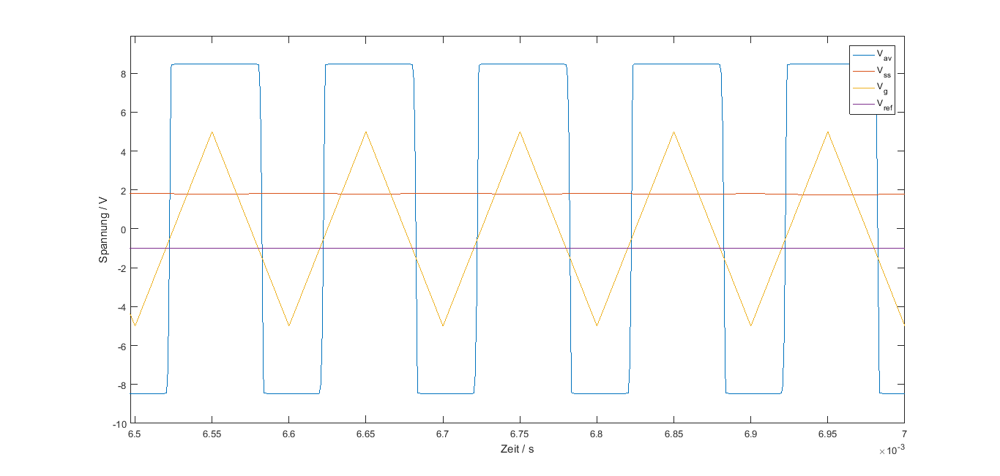{#09_fig_03 .align-center}
Nach t = 6ms hat sich die Spannung \(V_{av}\) auf einen Wert von ungefähr
U = 2V eingestellt. Aus der 09_fig_03{.interpreted-text role=”numref”}
lässt sich erkennen, dass sobald die Referenzspannung \(V_{ref}\) größer
ist als die eingeführte Dreiecksspannung \(V_{g}\), so schaltet der
Komparator auf die eingestellte Spannung \(-V_{ss}\) um. Andersherum,
sollte \(V_{ref}\) kleiner werden als \(V_{g}\), so schaltet der Komparator
auf die Spannung \(+V_{ss}\) um. Somit vergleicht der Operationsverstärker
diese Spannungen miteinander um anschließend einen Anstieg oder Abstieg
von \(V_{o}\) herbeizuführen. Wird die Referenzspannung möglichst nah an
dem negativen Maximum der eingespeisten Dreiecksspannung gehalten, so
kommt es bei der Ausgabe von \(V_{av}\) zu einer erhöhten Spannung, da der
Komparator durchgehend eine postive Spannung ausgibt und die daraus
resultierende Spannung \(V{av}\) hiervon abhängig ist.
Messungen des DC-DC Wandlers¶
Nachdem die Simulationen für die Schaltung durchgeführt sind, werden die Messungen am Texas Instruments Board durchgeführt. Hierdurch kann ein klarer Vergleich zur Simulation hergestellt werden.
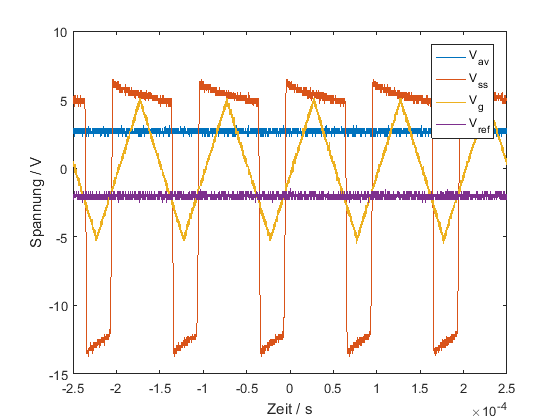{#09_fig_04 .align-center}
Die 09_fig_04{.interpreted-text role=”numref”} zeigt die Ergebnisse
für die unterschiedichen Spannungen aus den Messungen. Vergleichen wir
diese mit den Ergebnissen aus der 09_fig_03{.interpreted-text
role=”numref”}, so erkennt man die genauen Parallelitäten der
Abbildungen.
Wie schon zuvor erwähnt, kann mithilfe der eingehenden Dreiecksspannung \(V_{g}\) und der Referenzspannung \(V_{ref}\), das Ausgangssignal varriert werden. Somit findet der zuvor erwähnt Vergleich der Spannungen auch hier in der Messung statt. Werden unterschiedliche Größen der Referenzspanung eingestellt und die daraus resultierenden Plots nacheinander angezeigt, so erkennt man den Ansteig der Ausgangsspannung in abhängigkeit der Referenzspannung. Das eingehende Dreieckssignal \(V_{g}\) wurde hierbei nicht verändert. Auch dies kann varriert werden, um ein entsprechendes Verhalten am Ausgangssignal zu erhalten. Dies ist darauf zurückzuführen, dass durch die Größe, sowie die Pulsbreite des Signals, die Abstastung über der Referenzspannung, ein unterschiedliche Triggerverhalten des Operationsverstärkers auslösen würde.
html
{#09_fig_05
.align-center}
latex
{#09_fig_05
.align-center}
Sobald die grüne Kennlinie, welche die Referenzspannung anzeigt, die Dreiecksspannung trifft, schaltet der Operationsverstärker durch. Das Ausgangssignal, hier dargestellt als Dunkelblaue Kennlinie, ist in seiner Größe davon abhängig, in welchen Abständen die Referenzspannung auf das Dreieckssingal trifft. Desto größer die Abstände, umso größer die ausgehende Rechteckspannung die daraus resultierende Geichspannung.
Funktionsaufbau SMPS Schaltnetzteil¶
Das Ziel des SMPS Schaltnetzteils ist gleichzustellen mit dem zuvor schon bearbeiteten Dc-Dc-Wandlers. Ein einhergehendes gepulstes Eingangssignal, soll in eine stabile Gleichspannung als Ausgangssignal umgewandelt werden. Nachdem ein Blick auf die Schaltung geworfen wird, werden allerdings schon schnell die Schaltungstechnischen Unterschiede klar.
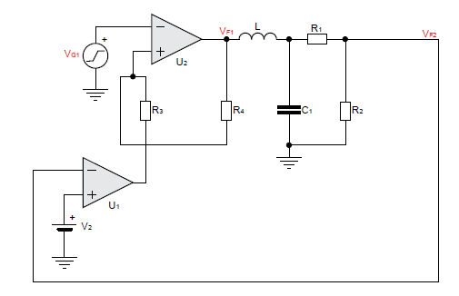{#09_fig_06 .align-center}
Die Schaltung aus der 09_fig_06{.interpreted-text role=”numref”}
beinhaltet vier wesentliche Elemente, welche zur Umsetzung des
Schaltnetzteils von Nöten sind. Das einhergehende Dreieckssignal
\(V_{g1}\) wird auf den Minuseingang des ersten Operationsverstärkers
gegeben. Die Beschaltung dieses Opeartionsverstärkers ist eine besondere
Form, welche sich Schmitt-Trigger nennt. Die genauen Spezifikationen
eines Schmitt-Triggers finden sich in dem Experiment 02 wieder. Das auf
den positiven Eingang des Schmitt-Triggers eingehende Signal resultiert
aus dem Ausgangssignal \(V_{F2}\), welches durch den zweiten
Opeartionsverstärker mit einer Referenzspannung verglichen wird. Somit
dient der untere Operationsverstäker als Komparator. Das anschließende,
aus dem unteren Operationsverstärker resultierende Signal läuft nun in
den positiven Eingang des Schmitt-Triggers.Das Ausgangssignal des
smith-Triggers ist ein Rechteckiges Signal, welches durch einen Tiefpass
noch gefiltert wird befor es als Ausgangs Signal verwendet wird. Die
vier wesentlichen Elemente sind also der Schmitt-Trigger, der
Komparator, der Tiefpass, sowie die eingebaute Regelstrecke, welche das
Ausgangssignal versuchen soll stabil zu halten. Ein genauerer Blick auf
die einzelenen Komponenten erleichtert das Verständnis für den Aufbau
und das genaue Zusammenwirken der einzelnen Komponenten.
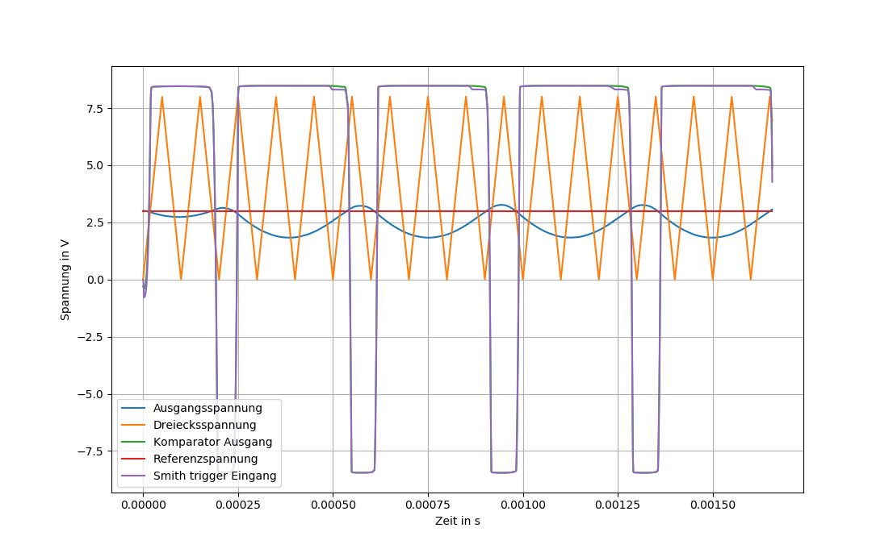{#09_fig_07 .align-center}
Die Abbildung 09_fig_07{.interpreted-text role=”numref”} beschreibt
die Eigenschaften des in der Schaltung integrierten Komparators. Das
restwellige Ausgangssignal schneidet die in den Operationsverstärker
einfliessende Gleichspannung (Referenzspannung). Sobald die
Ausgangsspannung einen Wert über den der Referenzspannung annimmt,
schaltet der Operationsverstärker auf seinen eingestellten, negativen
Spannungswert um. Sollte der Wert der Ausgangsspannung die
Referenspannung unterschreiten, so schaltet der Operationsverstärker auf
seine maximale Spannungsausgabe um. Durch das Verändern der
Referenzspannung in ihrerer Größe, kann somit der Trigger des
Operationsverstärkers verändert werden. Dies verhält sich ähnlich dem
Komparator aus dem ersten Aufgabenteil.
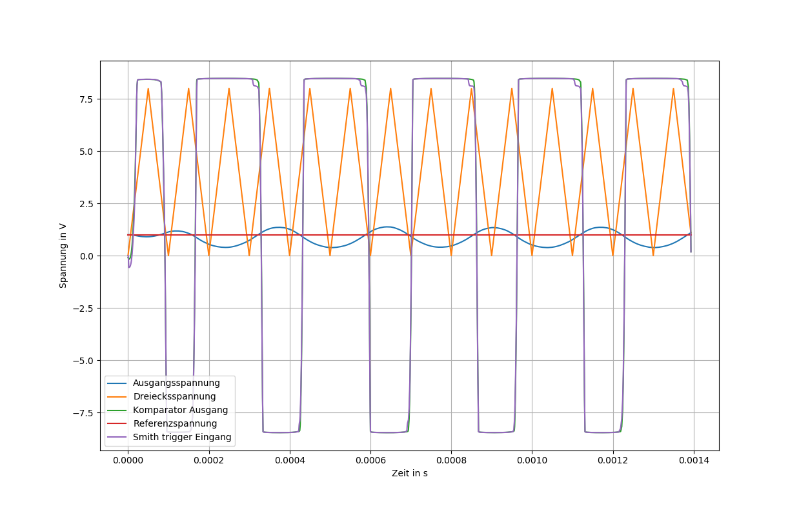{#09_fig_08 .align-center}
Das hieraus resultierende gepulste Ausgangssignal wird dann über den Schmitt-Trigger mit dem eingespeisten Dreieckssignal verglichen. Durch die Beschaltung des Operationsverstärkers als Schmitt-Trigger, generiert sich eine Hystherese, durch welche dann die ausgehende Pulsbreite der Rechteckspannung bestimmt wird. Diese Schwellspannung, mit unterem Schwellwert und oberem Schwellwert ist abhängig von der eingestellten Größe des Spannungsteilers, bestehend aus \(R_{3}\) und \(R_{4}\). Diese beiden Widerstandswerte haben Einfluss auf den Wert \(\beta\), welcher wiederum dazu genutzt werden kann, die Schwellspannung einzustellen. Der genaue Versuch zum Schmitt-Trigger kann wie schon zuvor erwähnt, im Experiment 02 recherchiert werden.
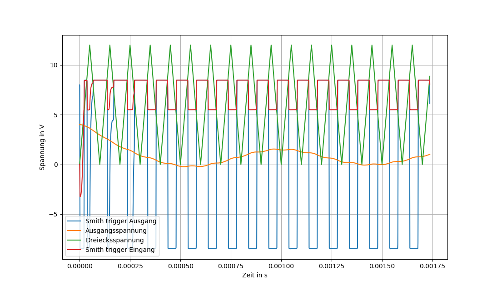{#09_fig_09 .align-center}
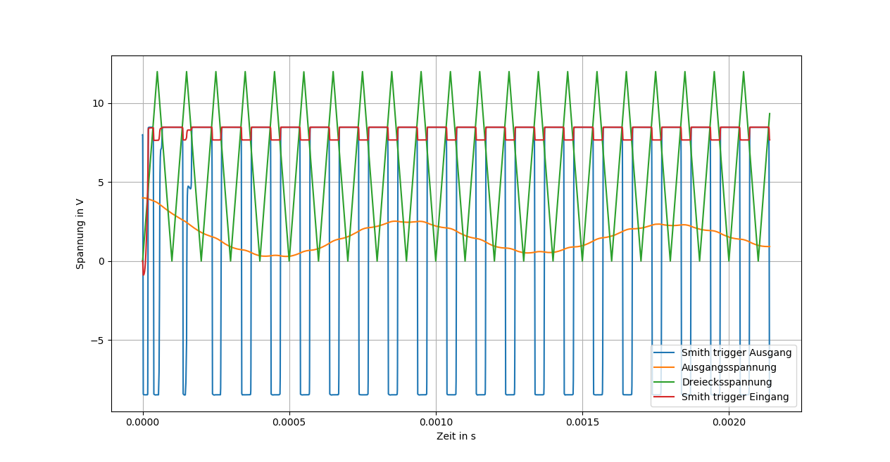{#09_fig_10 .align-center}
Sind \(R_{3}\) und \(R_{4}\) in ihrer Größe deklariert, so gibt der Schmitt-Trigger das gewünscht Signal aus. Hierbei wird das Ausgangssignal aus dem Operationsverstärker gepulst an das positive, sowie negative Maximum geschaltet. Durch die verwendung des Smith-Trigger ist es somit möglich durch Veränderung der Widerstände, das Ausgangssignal einzustellen. Dies ist davonabhängig, welche Versorgungsspannung an dem Operationsverstärker anliegt. Der nachfolgende Tiefpass sollte so ausgelegt werden, dass aus dem Rechtecksignal eine möglichst stabile Gleichspannung erzeugt werden kann. Die Restwelligkeit sollte hierbei so gering wie möglich sein. Durch die Regelstrecke, ist die Ausgangsspannung bei Verschiedenem Lastwiderstand ,mit geringe Abweichung, stets dieselbe. Sollte der Spannungsabfall an der Last sich verändern, so regelt sich das System durch den Komparator und des daraus entstehenden Eingangssignals am Schmitt-Trigger erneut wieder ein.
Messung des SMPS Schaltnetzteil¶
Nachdem die Simulationen für die Schaltung durchgeführt sind, werden die Messungen am Texas Instruments Board durchgeführt. Hierdurch lassen sich die Simulation Überprufen. Zuerst wird dass Ausgangssignal in Abhängigkeit der Referenspannung untersucht.
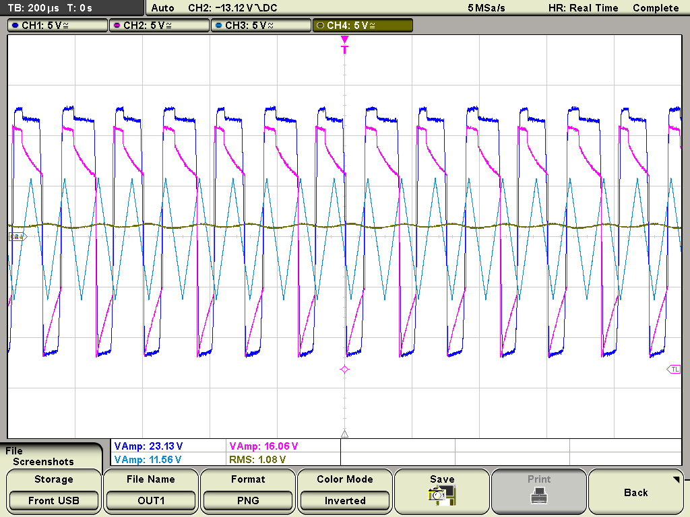{#09_fig_11 .align-center}
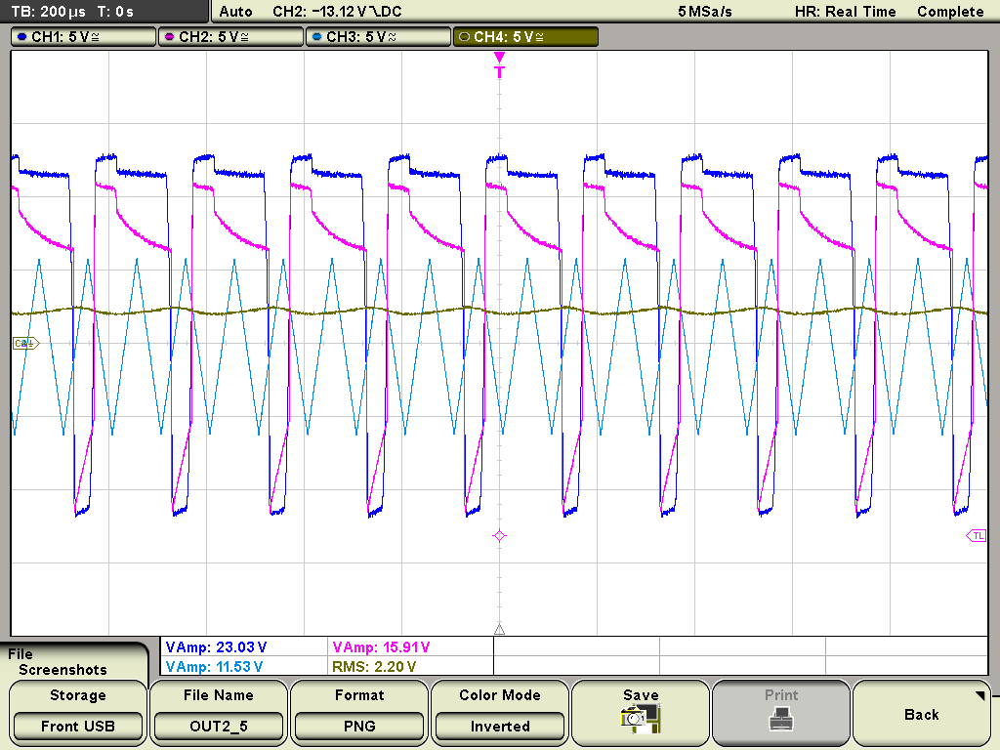{#09_fig_12 .align-center}
Wobei Channel 1 (Dunkel Blau) der Positive Eingang des Sschmitt-Triggers ist, Channel 2 (Pink) ist der Ausgang des Schmitt-Triggers, Channel 3 (Hell Blau) ist die Dreieckes Spannung und Channel 4 (ocker) ist das Ausgangs Signal. Es ist zu erkennen, das bei einer höheren Referenzspannung die Ausgangsspannung ebenfalls höher ausfällt. Wenn die Ausgangsspannung abfällt und somit kleiner wird als die nicht gemessene Referenzspannung wird der untere Operatiosverstärker auf seinen Positiven Ausgabewert geschaltet. Desweiteren ist eine Restwelligkeit im Ausgangssignal zusehen. Diese ensteht durch einen nicht optimale Ausgelegten Filter, zeigt aber gut wie die Regelstrecke bei einen Spannungsabfall wirkt.
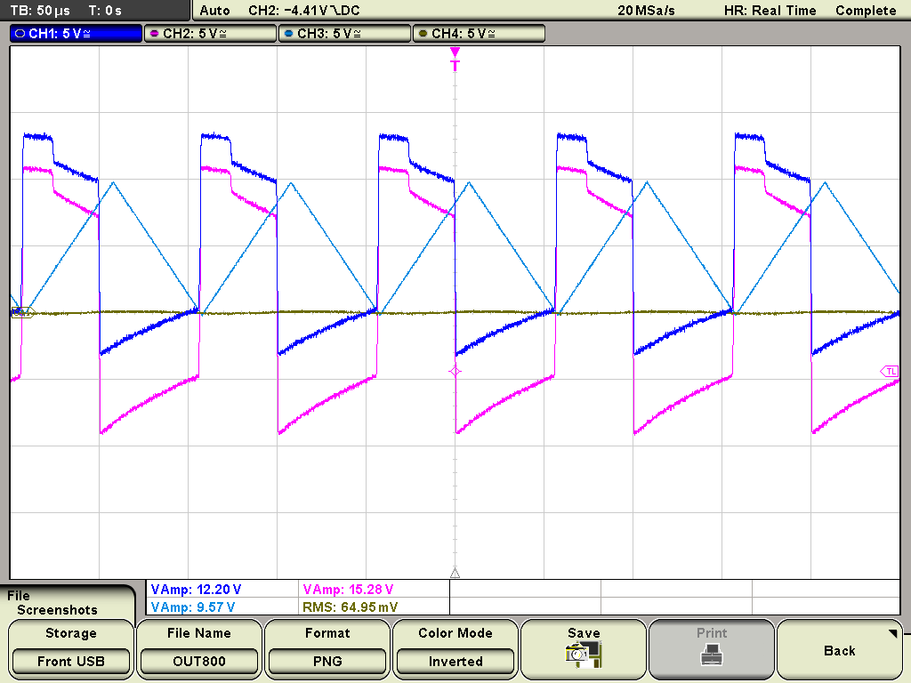{#09_fig_13 .align-center}
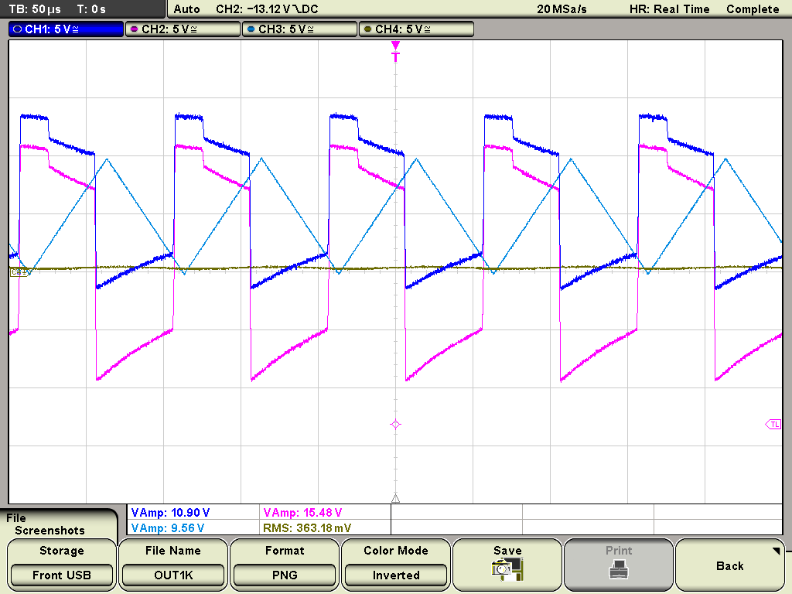{#09_fig_14 .align-center}
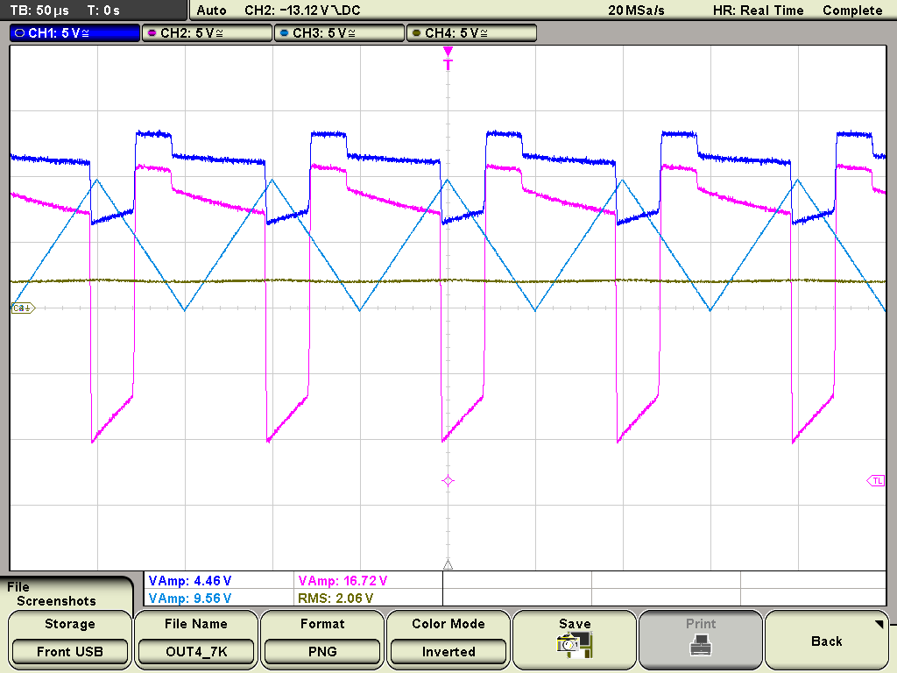{#09_fig_15 .align-center}
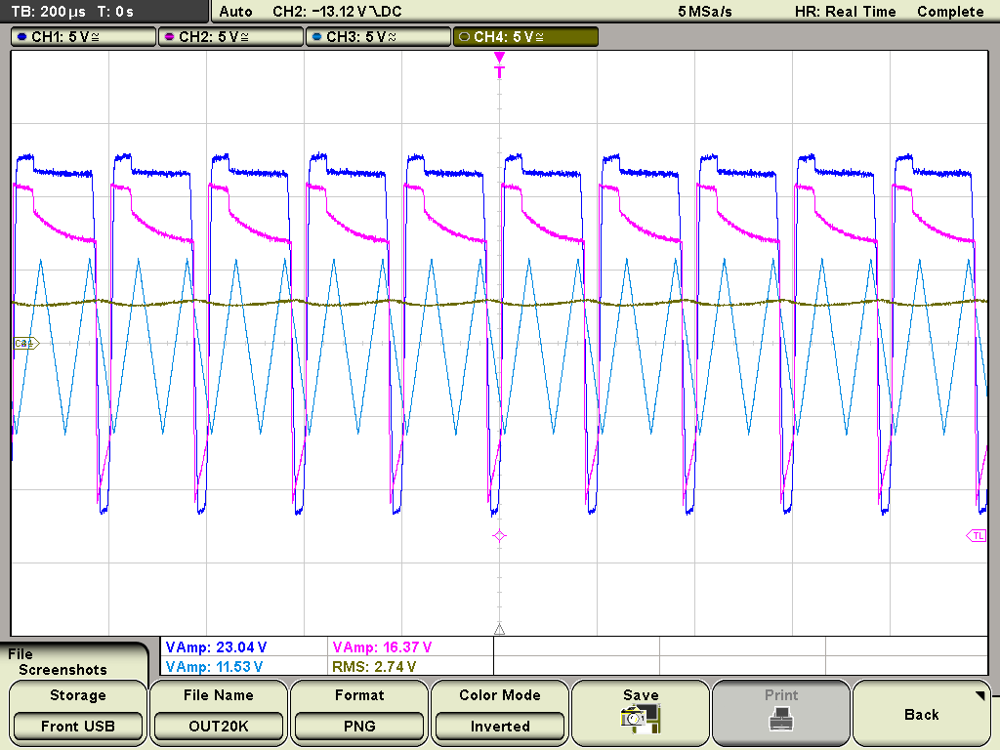{#09_fig_16 .align-center}
Bei diesen Messungen wird der Schmitt-Trigger untersucht. Hierführ wird der Widerstand R4 bei Konstanten Eingangsspannung variiert. Die kanal Belegung des Oszilloskop ist die selbe wie bei der letzten Messung. Es ist deutlich zu erkennen, das mit höheren Widerstand die Breite der Ausgangs Pulse größer wird. Durch die änderung der Pulsbreite ändert sich die Ausgangsspannung, welche in diesen fall bei größeren Widerstand größer wird. Dieses Verhalten ist erwarten und entspricht denn verhalten des Schmitt-Triggers.